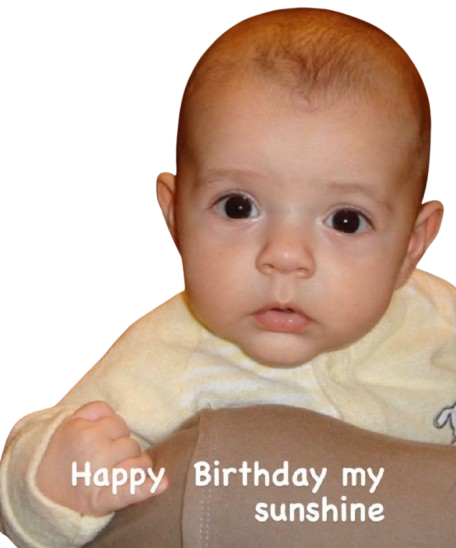
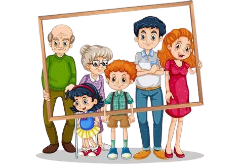
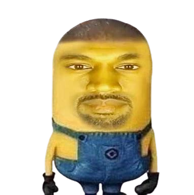

Mein Name ist Luis und bin 16 Jahre alt. Geboren wurde ich in Burgdorf,
ich lebe immernoch an der selben Stelle aber gehe in die BWD, welche in
Wankdorf liegt, wo ich auch die IMS absolviere. Schon seitdem ich klein bin
interessiere ich mich für die Informatik da mein Onkel mich dazu inspiriert hat
und seit ich zum ersten mal ihm bei der Arbeit zuschauen durfte wurde ich immer
anhänglicher zur Informatik und wurde auch immer neugieriger. Mein Vater kommt
ursprünglich aus Portugal ist aber mit 13 in die Schweiz gekommen und meine Mutter
wurde in der Schweiz geboren, jedoch sind ihre Eltern Italiener.

Meine Famillie besteht aus 5 Köpfen. darunter sind meine Schwester die eine Lehre
als FaGe macht und im moment 18 Jahre alt ist, die noch ältere Schwester die eine
Lehre als FaGe abgeschlossen hat und mittlerweile 20 Jahre alt ist, mein Vater, welcher
als Automechaniker tätig ist aber er hat schon die 51 erreicht und zu guter Letzt, meine Mutter,
sie arbeitet als Pharmassistentin und ist 49 Jahre alt. nattürlich habe ich auch noch mehr
Famillie, jedoch leben nur ein Teil davon in der Schweiz. Mein Onkel und meine Cousinen
sind in der Schweiz in Herzogebuchsee und meine Grossmutter lebt noch in Burgdorf.
meine weiten Verwandten sind aber alle in Italien oder Portugal.

Es gibt viele verschiedene Sachen die mich interessieren, unterdessen ist die Musik.
am meisten höre ich Kanye West, Tyler the creator oder änliches. ansonsten kann ich so gut
wie alles hören aber die Richtung "City pop" gefällt mir auch ziemlich. nebst dem.
eine meiner Interessen ist auch noch das Gamen, jedoch erfährt ihr mehr dazu im Kapitel "Freizeit".
Nebst diesen 2 Interessen gehe ich auch noch regelmässig ins Fitnesstudio in Burgdorf, das nun seit
knapp 4 Monaten. Mich interessiert auch noch das Lesen von Mangas oder Animes ziemlich.